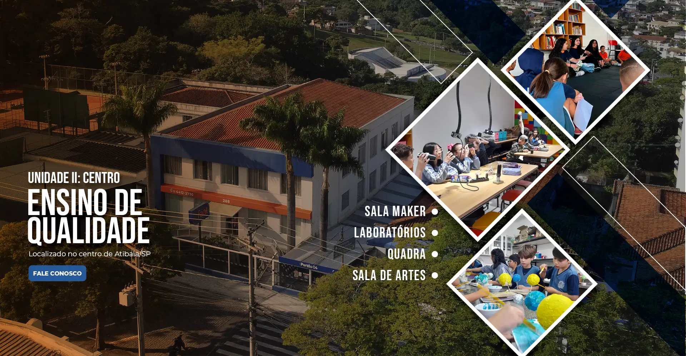

Próximos Eventos
Colégio Faat - Atibaia

10 de Maio
Feira Cultural
Apresentação de projetos dos alunos com foco em cultura, arte e inovação - 9h30.
18 de Maio
Mostra de Tecnologia
Exposição de projetos tecnológicos desenvolvidos pelos estudantes - 11 Horas.
25 de Maio
Apresentação Musical
Evento com apresentações de bandas e alunos da instituição - 12h30.
02 de Junho
Oficina de Arte
Atividades práticas envolvendo pintura, desenho e expressão artística - 8 Horas.